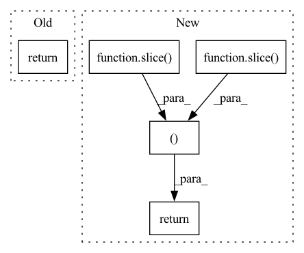

Pattern ID :38965

Before Change
values = values[:k]
indices = indices.transpose(transpose_dims)
values = values.transpose(transpose_dims)
return [values,indices]
jt.Var.topk = topk
After Change
dim+=input.ndim
index,values = jt.argsort(input,dim=dim,descending=largest)
dims = (slice(None),)*(dim-1)+(slice(0,k),)
indices = index[dims]
values = values[dims]
return values,indices
jt.Var.topk = topk
def kthvalue(input, k, dim=None, keepdim=False):
In pattern: SUPERPATTERN
Frequency: 3
Non-data size: 5
Instances
Fragment ID: 111107503
Project Name: jittor/jittor
Commit Name: 8e010e8f612c85bb156af4f0ebeee52e3a02a219
Time: 2020-09-09
Author: dllgdxlxl@gmail.com
File Name: python/jittor/misc.py
M Class Name: AnonimousClass
N Class Name: AnonimousClass
M Method Name: topk(5)
N Method Name: topk(5)
M Parent Class:
N Parent Class:
M File Name: python/jittor/misc.py
N File Name: python/jittor/misc.py
M Start Line: 418
M End Line: 431
N Start Line: 408
N End Line: 416
'>
Before Change
if not keepdim and indices.ndim>1:
indices = indices.squeeze(dim)
values = values.squeeze(dim)
return [values,indices]
jt.Var.kthvalue = kthvalue
After Change
if dim<0:
dim+=input.ndim
index,values = jt.argsort(input,dim=dim)
dims = (slice(None),)*(dim-1)+(slice(k-1,k),)
indices = index[dims]
values = values[dims]
if not keepdim and indices.ndim>1:
indices = indices.squeeze(dim)
values = values.squeeze(dim)
return values,indices
jt.Var.kthvalue = kthvalue
'>
Fragment ID: 111107508
Project Name: jittor/jittor
Commit Name: 8e010e8f612c85bb156af4f0ebeee52e3a02a219
Time: 2020-09-09
Author: dllgdxlxl@gmail.com
File Name: python/jittor/misc.py
M Class Name: AnonimousClass
N Class Name: AnonimousClass
M Method Name: kthvalue(4)
N Method Name: kthvalue(4)
M Parent Class:
N Parent Class:
M File Name: python/jittor/misc.py
N File Name: python/jittor/misc.py
M Start Line: 437
M End Line: 452
N Start Line: 422
N End Line: 432
'>
Before Change
min2 = max(0, min2-border)
max1 += border
max2 += border
return min1,max1,min2,max2
return r
def croptobbox(img, border=None):
After Change
max2 += border
r = min1,max1,min2,max2
if as_slice:
return (slice(r[0],r[1]),slice(r[2],r[3]))
return r
def croptobbox(img, border=None):
'>
Fragment ID: 111107505
Project Name: luispedro/mahotas
Commit Name: 2f7c44820cf37c90cd339f4765bff6726738ec6e
Time: 2013-09-22
Author: luis@luispedro.org
File Name: mahotas/bbox.py
M Class Name: AnonimousClass
N Class Name: AnonimousClass
M Method Name: bbox(3)
N Method Name: bbox(2)
M Parent Class:
N Parent Class:
M File Name: mahotas/bbox.py
N File Name: mahotas/bbox.py
M Start Line: 33
M End Line: 37
N Start Line: 11
N End Line: 40